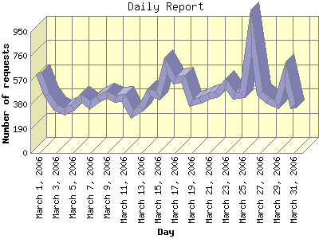

Report generated by Analog 6.0 and Report Magic 2.21
|
Web Server Statistics for "Harish Narayanan (hnarayan) - March 2006" Report generated by Analog 6.0 and Report Magic 2.21 |
The Daily Report identifies the activity for each day within the reporting period. Remember that one page hit can result in several server requests as the images for each page are loaded.

| Day | Number of requests | Number of bytes transferred | Percentage of the bytes | Percentage of the requests | |
|---|---|---|---|---|---|
| 1. | March 1, 2006 | 623 | 28.358 MB | 5.38% | 4.33% |
| 2. | March 2, 2006 | 454 | 25.783 MB | 4.89% | 3.15% |
| 3. | March 3, 2006 | 358 | 10.925 MB | 2.07% | 2.49% |
| 4. | March 4, 2006 | 324 | 17.086 MB | 3.24% | 2.25% |
| 5. | March 5, 2006 | 354 | 8.579 MB | 1.63% | 2.46% |
| 6. | March 6, 2006 | 433 | 20.199 MB | 3.83% | 3.01% |
| 7. | March 7, 2006 | 372 | 20.208 MB | 3.83% | 2.58% |
| 8. | March 8, 2006 | 426 | 13.257 MB | 2.51% | 2.96% |
| 9. | March 9, 2006 | 455 | 20.571 MB | 3.90% | 3.16% |
| 10. | March 10, 2006 | 424 | 16.993 MB | 3.22% | 2.94% |
| 11. | March 11, 2006 | 429 | 18.206 MB | 3.45% | 2.98% |
| 12. | March 12, 2006 | 307 | 11.380 MB | 2.16% | 2.13% |
| 13. | March 13, 2006 | 349 | 9.846 MB | 1.87% | 2.42% |
| 14. | March 14, 2006 | 472 | 17.516 MB | 3.32% | 3.28% |
| 15. | March 15, 2006 | 451 | 17.384 MB | 3.30% | 3.13% |
| 16. | March 16, 2006 | 679 | 23.748 MB | 4.50% | 4.72% |
| 17. | March 17, 2006 | 567 | 33.124 MB | 6.28% | 3.94% |
| 18. | March 18, 2006 | 582 | 15.480 MB | 2.94% | 4.04% |
| 19. | March 19, 2006 | 391 | 8.325 MB | 1.58% | 2.72% |
| 20. | March 20, 2006 | 413 | 11.901 MB | 2.26% | 2.87% |
| 21. | March 21, 2006 | 442 | 9.218 MB | 1.75% | 3.07% |
| 22. | March 22, 2006 | 463 | 15.319 MB | 2.90% | 3.22% |
| 23. | March 23, 2006 | 542 | 12.787 MB | 2.42% | 3.77% |
| 24. | March 24, 2006 | 451 | 10.922 MB | 2.07% | 3.13% |
| 25. | March 25, 2006 | 456 | 24.132 MB | 4.58% | 3.17% |
| 26. | March 26, 2006 | 942 | 18.292 MB | 3.47% | 6.54% |
| 27. | March 27, 2006 | 471 | 19.841 MB | 3.76% | 3.27% |
| 28. | March 28, 2006 | 413 | 17.367 MB | 3.29% | 2.87% |
| 29. | March 29, 2006 | 383 | 13.304 MB | 2.52% | 2.66% |
| 30. | March 30, 2006 | 619 | 27.440 MB | 5.20% | 4.30% |
| 31. | March 31, 2006 | 352 | 9.873 MB | 1.87% | 2.44% |
Most active day March 26, 2006 : 726 pages sent. 942 requests handled. 19,180,740.00 served.
Daily average: 464 requests handled. 17.012 MB served.
This report was generated on April 27, 2006 10:40.
Report time frame March 1, 2006 00:07 to March 31, 2006 23:55.
| Web statistics report produced by: | |
 Analog 6.0 Analog 6.0 |  Report Magic 2.21 Report Magic 2.21 |